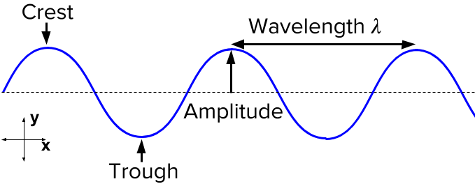

2 Week One: Introduction and Background
The aims of this module will enable to operationalise remotely sensed Earth observation data for informing decisions on environmental hazards arising from a changing climate, specifically in relation to (a) urban areas and (b) future urban sustainability that may help to bring about policies in managing earth’s resources and address the problem of climate change.
3 Remote Sensing Cities and Environment
Recent trend on studies around urban area, green space, access to infrastructure, impact on health & well-being has brought the rise of remote sensing cities and environment. NASA defines remote sensing as acquiring information from a distance, by sensors that are mounted on satellites, planes (aerial imagery), drones, phones, free standing on the ground or sea (with hand held devices) etc. (CASA0023).
3.1 Satellite
NASA launched Landsat satellites that changed the method of collecting earth’s landscape data popularly known as remote sensing which interchangeably called as ‘Earth Observation’. Scientist started to get more data and details as the NASA went ahead with launches of Landsat1 to Landsat8. So far to receive enormous detailed data about earth’s resources and climate, the best has been Landsat8, With more sensitive sensors scientist can retrieve improved accuracy in data that helps to manage the earth’s resources and climate optimally. For example, study to most subtle change is vegetation is possible now with Landsat8.
3.2 Sensors
Sensors are mounted on satellites, drones etc. The sensors monitor electromagnetic rays of spectrum. They are of two types
3.2.1 Passive Sensors
Passive sensors are those that does not emit energy but uses the energy that is available i.e., from the sun to reflects back energy. The energy reflected back is in electromagnetic waves. For example human eye, camera, satellite sensor.
3.2.2 Active Sensors
They are those that emit energy. Have an energy source for illumination Actively emits electormagentic waves and then waits to receive Such as: Radar, X-ray, LiDAR Sensors can be mounted on any platform.
3.3 Electromagnetic Spectrum
It is around us all the time, without which the world around us would not exist is the Electromagnetic Radiations. These waves spread across from a very short radiations of gamma rays, x-rays, ultra-violate rays, visible-light waves, infrared waves, micro waves, radio waves. It is collectively known as the electromagnetic Spectrum or EMS. Electromagnetic (EM) waves are energy waves that emits having both electrical and magnetic properties is a two dimensional (2D) property.
EM waves have crests and troughs like ocean waves and the distance between two crests is known as wavelength, see figure below. While some wavelengths are very long and measured in meters, some are very short and measured in nano-meters. The number of wavelengths passed at a point in 1 second is known as frequency of the wave. One wave or cycle per second is known as a Hertz (Hz).
3.4 Interacting with Earth’s surface
Before these radiation are retrieved by the sensors, the electromagnetic radiation(EMR) (e.g. from the sun) experiences surface and atmospheric changes. The surface changes are when energy gets absorbed by the surface energy being transmitted through the surface. There are below term important to understand: - Waves of an electromagnetic field, travel through space and carry radiant energy = Electromagnetic radiation (EMR). Waves are part of the EMR spectrum. - Energy carried by EMR waves = radiant energy -Energy per unit of time = radiant flux - Energy from the sun = incoming short wave radiation or shortwave radiation - Energy (solar power) from the sun per unit area per unit time (from electromagnetic radiation) = solar irradiance (per unit time - flux) - Energy leaving a surface per unit area per unit time = Exitance (emittance) (per unit time - flux) - Flux means time here.
Whereas the atmospheric energy can be scattered by particles in the atmosphere. There are three types of atmospheric scattering: - Rayleigh = particles are very small compared to the wavelength - Mie = particles are the same size compared to the wavelength - Non selective = particles are much larger than the wavelength.
3.4.1 SAR
Active sensor such as Synthetic Aperture Radar (SAR) can see through clouds. Bidirectional Reflectance Distribution Function (BRDF) are surface interactions where view (e.g. sensor) and illumination (e.g. sun) angles can change. Energy being reflected from the surface that is smooth or diffuse. Thus, BRDF for flat surface, water surface, vegetation surface have got different texture of surface. SAR can also work on polaristion and fluoresence. Satellite (and aerial) sensors are affected by the atmospheric scattering which can be delt with atmospheric correction. These will be discussed in later weeks. The data cant be directly used as energy reflected from Earth to a sensor. Perhaps, it needs correction due to there many interactions that influence the data being created and we use.
3.5 Data Format
In the majority of cases remotely sensed data is raster. Data format is generally geo.tif. Raster data are stacked vertically in B!, B2, B3 etc.(insert img). LiDAR data points has x,y with the z-dimension to collect attitude and 3D analysis. Data format are of following 4 types:
- Spatial Resolution
Spatial resolution has the size of the raster grid per pixel (e.g. 20cm or 30m). One can compare the spatial resolution of 10 by 10 cm vs 1 by 1 km.
- Spectral Resolution
Spectral Signature is unique signature given to material on earth or its combination shown through a graph . Sensors are designed to monitor specific range of EM spectrum called band. Different sensors will have different number of bands. Spectral Resolution has the number of bands it records data in. Spectral resolution 1 means Bands: range of spectrum, where more rich the band, will have more elements to identify. Spectral resolution means to observe part of spectrum in the window.
The 7-12 bands are known as multiple spectral bands where as 10-25 bands are hyper spectral bands which has continuous spectrum. It not always satellite can record the bands but ground too known as spectroradiometer which are pure white refernce panels that needs to be calibrated.
Radiometric Resolution It identifies differences in light or reflectance, in practice this is the range of possible values. The ability of a sensor to identify and show small differences in energy. The higher the resolution, the more sensitive it is i.e., resolution of 8 bit can have 256 possible values where a resolution of 4 bit has 16 possible values. The more sensitive, the more components to show where as lower the radiometric resolution the lower the quality of the image and possibility to differentiate features.
Temporal Resolution
This is the resolution means the time it revisits (e.g. daily, every 7 days, on demand). Its low resolution means it has a large pixel size (e.g. MODIS is 500m by 500m pixel).
3.5.1 Other Considerations
geosynchronous orbit (GSO) if the satellite matches the Earth’s rotation or if geostationary orbit holds same position, usually only for communications but some sensors are geostationary.
In order to carry data collection for a research question the answers should be looked is about will dictate what sensor is most appropriate size of features, date range, revisit requirement, spectral sensitivity, cost.
Heads-up for practical: Loading Landsat and Sentinel data, SNAP and R, regions of interest and plot.
3.5.2 Electromagnetic Spectrum
Landsat vs Sentinel B1, B2, B3 B4 (insert img) and graphs (inster img)
3.5.3 Atmosphere Correction
3.5.4 SNAP
only 3 bands Spectral feature space (insert img of scatter plot) then we do a tassel cap transformation to combine coefficient to simplify. Principle Component Analysis (PCA) is carried to simplify on dryness for urban, brightness for greeness, wetness for yellow. (insert img). Although there are various way to carry PCA that are readily available e.g., Normalized Difference in Vegetation Index (NDVI).
NDVI = insert img there are also healthy green vegetation
NDWI: Normalized Difference in Water Index NDSI: Normalized Difference in Soil Index NDBI: Normalized Difference in Built-up Index
the study area could be spread over two tiles (insert img) and different dates. Thus, we combine and take step by step process.
However, in Google Earth Engine (GEE) take all the titles of different dates and calculates the median to calculate …..
SNAP when open images
high albido:
10m or landsat 30 m (different spect./ scale) upscaling or downscaling resampling Machine Learning (ML) is used to learn land cover change Spectral Signature vs Spectral Libraries
Region of Interest:
- PIF: suedo invariant features
-
w
-
download
-
understand bands end member analysis/ MESMA
satellite Segments
4 Application
I could find an interesting article by
5 Reflection
Today is day one of our lecture and only know that this lecture is on remote sensing which is something to do with satellites and data. While it has begun, I am stressed as to if this module is gonna be a tough one because I am overwhelmed by my only little knowledge of the term associated with it i.e., “satellite”, “scientists” and most of all “NASA”. It kind of give me a fear of learning as it meant for strong brainiest and brainwaves. The first lecture is over and I feel little better about the above terms as the prof make is quite engaging to understand and breaks it down precisely for my short wavelength. I like the fun facts stated during the lecture for example there are about 27,000 pieces of junks/ waste satellites lying in out in space. What actually resonates mostly for me that in upcoming lectures and practicals one would learn to enable skills that reduces the time of data imaging via use of Google earth engine (GEE) that gives more free resources to process large volumes of data with the advent of cloud computing. With rising demand of earth observation data and analysis there seems potential emergence of policy decisions to make use of remotely sensed data. However, it is filled with jargon that often isn’t as complicated as it sounds. Thus, I look forward to reach the week of GEE but it might be too ambitious for me as of now. So, I am gonna focus week by week.